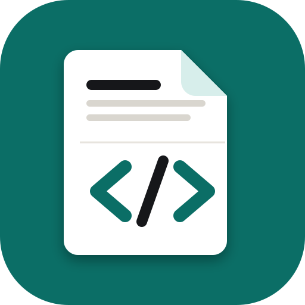

HTML ViewerHTML Viewer is on the App Store as HTML Viewer: Code Editor. Here is how it works.
Email bkdigitalleads@gmail.com and we reply within two business days. Say which iPhone and iOS version you have, and what kind of file it is.
In Mail, Files or Messages, tap the .html file, then tap Share and pick HTML Viewer in the row of apps (tap More if you do not see it). The page opens. You can also open HTML Viewer and tap Open a file to pick it in Files. The app keeps its own copy; the email or the file in Files is not changed.
Open the file and tap Source at the top. The code shows with colors and line numbers. Tap the wrap button at the top right to wrap long lines or not, Find to search, and Copy all to copy the whole file.
A page's pictures and style sheets are separate files. If they are on the web, they are off for files from other apps: tap Change under the tabs and turn on Web content. If they were saved beside the page, open the page with Open a file and pick the page and its pictures and style sheets together; the app puts each one where the page looks for it.
A page from someone else can carry scripts. They stay off for files from other apps until you turn on Scripts for that file (tap the text size button, then Scripts). Files you make in the app, by pasting code or saving a new file, have scripts on. A page can only read the files in its own folder, either way.
Tap Find in page and type. Every match is marked; the arrows go to the next and the previous one. In Source, Find works the same way on the code.
Open the file and tap PDF. The PDF is made on your iPhone from the page, with its pictures and styles. Then tap Share, Print or Save to Files. A code or text file prints as its text. The first PDF is free; after that, PDFs are part of Pro.
Yes, with Pro. Tap Edit: the code is below and the page is live above it, updating as you type. There is undo and redo, a row of code characters above the keyboard, and find and replace. Tap Save to save over the app's copy, or Save as a new file to keep the original as it was. The file in Mail or Files is never changed.
.html, .htm and .xhtml pages and .svg pictures open as a page; .css, .js, .json, .xml, .md and .txt open as code. Other text files open as text. .mht and web archive files do not open; save the page as HTML and open that.
Yes. Tap Paste code on the first screen, then the paste button. The code opens as a new file, as HTML, CSS, JavaScript, JSON or text depending on what it looks like.
No. There is no address bar. Links inside a page open in your browser, outside the app.
No, unless you share a file or a PDF. There is no account and no server. If you buy Pro, Apple and RevenueCat keep a record of the purchase; see the privacy policy.
Free forever: opening and previewing any file, viewing the source, find, copy, your last three recent files and your first PDF. Pro adds editing with the live page and saving, find and replace, every PDF after the first, every recent file with folders, and source themes and font size: weekly with a free trial for new subscribers, yearly, or lifetime with one payment. Prices are shown in the app. Files are never deleted on the free plan: older ones are kept on your iPhone and come back with Pro. On a new iPhone, tap Restore purchases in Settings or on any Pro screen. Manage or cancel a subscription in the Settings app, your name, Subscriptions.